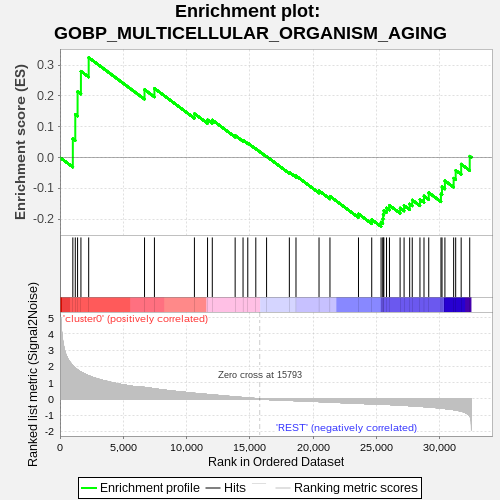
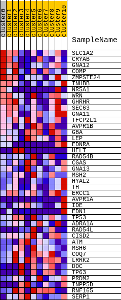
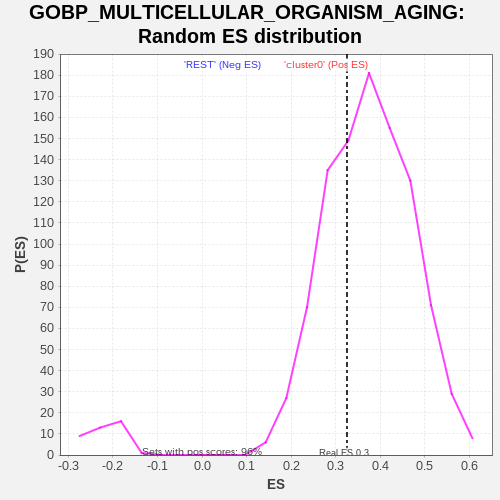

| | | Dataset | GTE_table.phenotypes_gte.cls#cluster0_versus_REST |
| Phenotype | phenotypes_gte.cls#cluster0_versus_REST |
| Upregulated in class | cluster0 |
| GeneSet | GOBP_MULTICELLULAR_ORGANISM_AGING |
| Enrichment Score (ES) | 0.32515213 |
| Normalized Enrichment Score (NES) | 0.8653908 |
| Nominal p-value | 0.68262225 |
| FDR q-value | 1.0 |
| FWER p-Value | 1.0 |
Table: GSEA Results Summary

Fig 1: Enrichment plot: GOBP_MULTICELLULAR_ORGANISM_AGING
Profile of the Running ES Score & Positions of GeneSet Members on the Rank Ordered List
| SYMBOL | TITLE | RANK IN GENE LIST | RANK METRIC SCORE | RUNNING ES | CORE ENRICHMENT | | 1 | SLC1A2 | na | 1014 | 2.041 | 0.0607 | Yes |
| 2 | CRYAB | na | 1207 | 1.889 | 0.1399 | Yes |
| 3 | GNA12 | na | 1389 | 1.776 | 0.2143 | Yes |
| 4 | COMP | na | 1653 | 1.644 | 0.2803 | Yes |
| 5 | ZMPSTE24 | na | 2266 | 1.414 | 0.3252 | Yes |
| 6 | INHBB | na | 6677 | 0.701 | 0.2209 | No |
| 7 | NR5A1 | na | 7459 | 0.617 | 0.2246 | No |
| 8 | WRN | na | 10618 | 0.338 | 0.1425 | No |
| 9 | GHRHR | na | 11655 | 0.265 | 0.1225 | No |
| 10 | SEC63 | na | 12030 | 0.240 | 0.1218 | No |
| 11 | GNA11 | na | 13835 | 0.117 | 0.0715 | No |
| 12 | TFCP2L1 | na | 14459 | 0.080 | 0.0560 | No |
| 13 | AVPR1B | na | 14833 | 0.056 | 0.0470 | No |
| 14 | GBA | na | 15467 | 0.018 | 0.0283 | No |
| 15 | LEP | na | 16318 | -0.027 | 0.0034 | No |
| 16 | EDNRA | na | 18117 | -0.084 | -0.0483 | No |
| 17 | HELT | na | 18641 | -0.107 | -0.0596 | No |
| 18 | RAD54B | na | 20461 | -0.163 | -0.1082 | No |
| 19 | CGAS | na | 21325 | -0.196 | -0.1260 | No |
| 20 | GNA13 | na | 23578 | -0.271 | -0.1832 | No |
| 21 | MSH2 | na | 24624 | -0.301 | -0.2018 | No |
| 22 | HYAL2 | na | 25362 | -0.320 | -0.2101 | No |
| 23 | TH | na | 25501 | -0.326 | -0.1996 | No |
| 24 | ERCC1 | na | 25527 | -0.327 | -0.1857 | No |
| 25 | AVPR1A | na | 25581 | -0.329 | -0.1725 | No |
| 26 | IDE | na | 25793 | -0.336 | -0.1639 | No |
| 27 | EDN1 | na | 26025 | -0.344 | -0.1555 | No |
| 28 | TP53 | na | 26865 | -0.380 | -0.1643 | No |
| 29 | ADRA1A | na | 27180 | -0.394 | -0.1562 | No |
| 30 | RAD54L | na | 27621 | -0.413 | -0.1511 | No |
| 31 | CISD2 | na | 27825 | -0.423 | -0.1383 | No |
| 32 | ATM | na | 28433 | -0.455 | -0.1365 | No |
| 33 | MSH6 | na | 28753 | -0.472 | -0.1250 | No |
| 34 | COQ7 | na | 29128 | -0.494 | -0.1143 | No |
| 35 | LRRK2 | na | 30094 | -0.565 | -0.1186 | No |
| 36 | DDC | na | 30176 | -0.572 | -0.0953 | No |
| 37 | TP63 | na | 30405 | -0.591 | -0.0757 | No |
| 38 | PRDM2 | na | 31095 | -0.657 | -0.0673 | No |
| 39 | INPP5D | na | 31256 | -0.676 | -0.0418 | No |
| 40 | RNF165 | na | 31689 | -0.746 | -0.0215 | No |
| 41 | SERP1 | na | 32365 | -1.031 | 0.0042 | No |
Table: GSEA details [plain text format]

Fig 2: GOBP_MULTICELLULAR_ORGANISM_AGING
Blue-Pink O' Gram in the Space of the Analyzed GeneSet

Fig 3: GOBP_MULTICELLULAR_ORGANISM_AGING: Random ES distribution
Gene set null distribution of ES for GOBP_MULTICELLULAR_ORGANISM_AGING